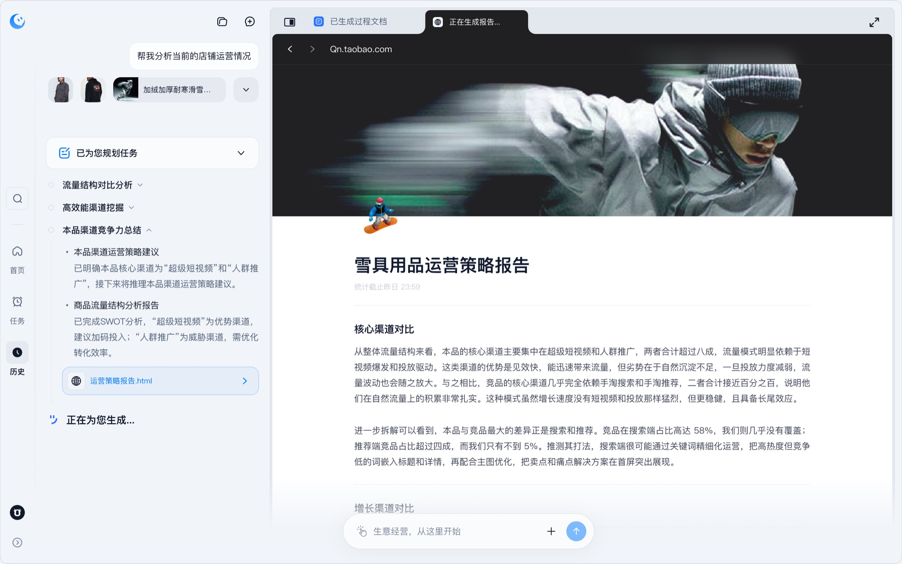

经营洞察
从店铺经营状态出发，提供洞察与策略建议，帮助商家找到下一步要处理的问题。
MERCHANT AI · PRODUCT FRAMEWORK · 2025.09—2026.05
我主导「生意管家」2.0 AI 客户端产品设计，以商家经营为中心，围绕店长、运营、美工的日常任务，定义经营首页、AI 交互模式和能力入口。

01 / FRAMEWORK
客户端不只提供一个对话框，而是把经营洞察、任务发起、技能使用与日常工作入口放在同一套产品框架中。以下结构对应产品首页与导航中呈现的核心模块。
从店铺经营状态出发，提供洞察与策略建议，帮助商家找到下一步要处理的问题。
用自然语言发起经营任务，并通过建议问题降低第一次使用的启动成本。
通过技能、连接器及模型选择承接不同类型的任务，让能力入口可发现、可组合。
将定时任务、知识库、IM 频道与历史记录纳入客户端，支持商家持续开展日常经营工作。
02 / INTERACTION MODES
根据商家的任务类型设计不同交互，而不是要求所有场景都挤进单轮问答。
03 / MY CONTRIBUTION
04 / RELATED WORK
围绕正向打单发货、异常订单处理和物流预警分析等场景，负责产品设计与能力规划，探索将履约决策交给 Agent 协助处理。
降本数据为相关产品业务累计结果；我的职责是对应产品设计与建设，不代表个人单独创造全部业务收益。